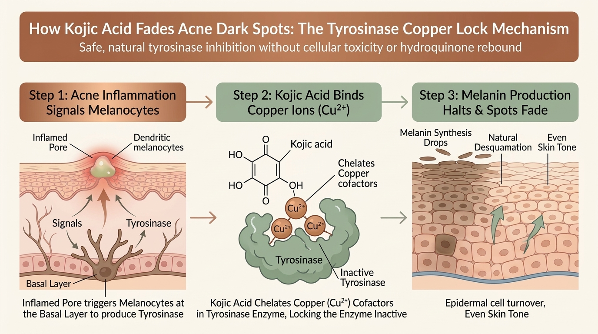
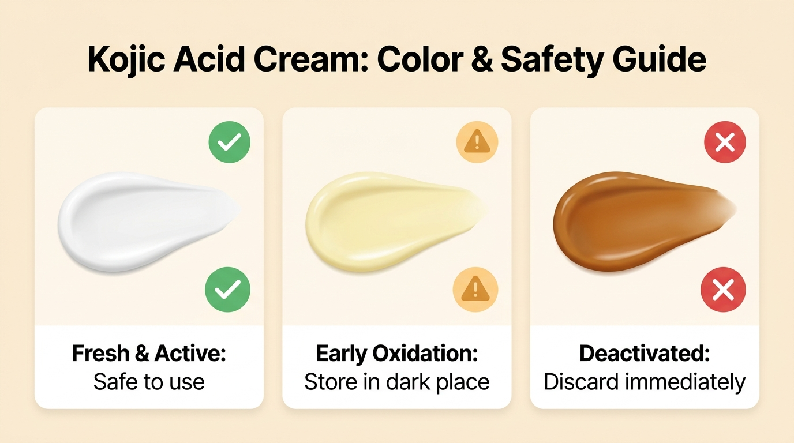
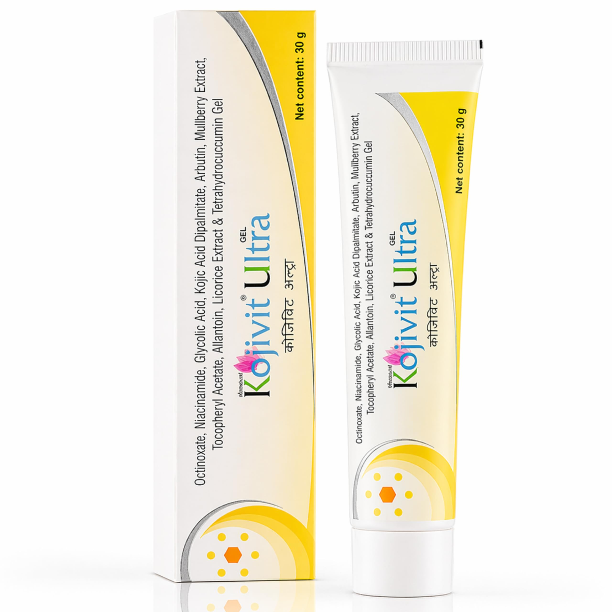
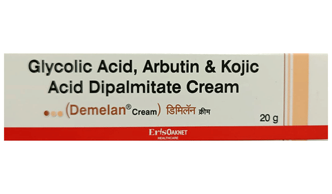
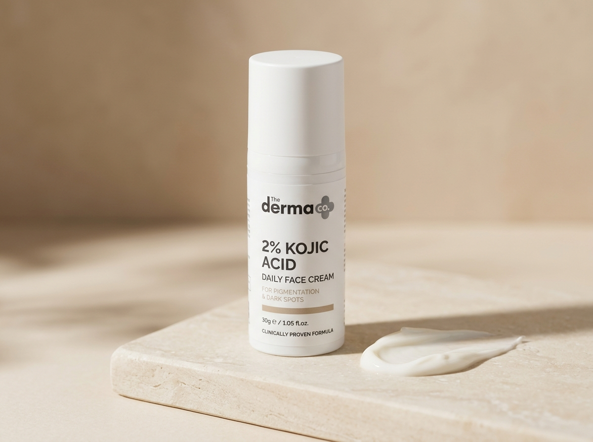

How Kojic Acid Fades Acne Marks: The Tyrosinase Copper Lock
Kojic acid was originally discovered in Japan as a natural byproduct of fermenting malted rice during the production of sake and soy sauce. Workers at sake breweries famously had soft, noticeably spotless hands, prompting dermatologists to isolate the compound.
Inside your skin cells, dark spots are made by an enzyme called tyrosinase[1]. Tyrosinase acts like a spark plug in an engine: it turns an amino acid called tyrosine into dark brown eumelanin pigment.

The Copper Chelation Mechanism
To function, the tyrosinase enzyme requires two copper ions (Cu2+) at its core[1]. Without copper, the enzyme is completely inert and cannot produce melanin.
Kojic acid is a powerful natural chelating agent. When applied to the skin, its molecular structure wraps around those copper ions and locks them away[1].
With the copper deactivated, your skin's pigment factories temporarily pause melanin production. As your epidermal skin cells naturally turnover and shed every 28 to 40 days, the old, stained surface cells slough away, revealing fresh, even-toned skin underneath.
Kojic Acid vs Hydroquinone vs Alpha Arbutin: The Safety Matrix
For decades, Hydroquinone was considered the medical gold standard for skin lightening. However, on melanin-rich Indian skin (Fitzpatrick phototypes IV to VI), Hydroquinone carries significant risks[2].
Hydroquinone is a cytotoxic bleaching agent—it works by destroying melanocyte cells. If used without strict physician oversight, it frequently triggers exogenous ochronosis (a permanent, irreversible bluish-black staining of the skin) and severe rebound hyperpigmentation.
| Feature | Kojic Acid (1% - 2%) | Hydroquinone (2% - 4%) | Alpha Arbutin (2%) |
|---|---|---|---|
| Biological Mechanism | Chelates copper ions to pause tyrosinase[1] | Cytotoxic to melanocytes (kills pigment cells) | Slowly releases hydroquinone-like molecules |
| Safety on Indian Skin | High (Non-cytotoxic) | Low (High Risk of Ochronosis) | Very High (Ultra Gentle) |
| Risk of Rebound Darkening | Very Low | High once stopped abruptly | Very Low |
| OTC Availability in India | Over-the-counter (Kojivit, Derma Co) | Prescription required in India | Over-the-counter (Minimalist) |
| Chemical Stability | Prone to oxidation (air/light) | Moderately stable | Highly stable in water base |
| Best Used For | Stubborn brown post-acne marks (PIH) | Severe melasma under derm guidance | Daily gentle maintenance & prevention |
Clinical studies comparing Kojic Acid with Hydroquinone found that formulations pairing 2% Kojic Acid with a gentle exfoliant like Glycolic Acid matched 4% Hydroquinone in lightening post-inflammatory marks, but with zero instances of permanent disfigurement[2].
PIH (Brown Spots) vs PIE (Red Marks): Why This Distinction Matters
The most common reason people believe Kojic Acid "did not work" is misdiagnosis. Acne leaves behind two completely different types of marks:
- PIH (Post-Inflammatory Hyperpigmentation): Brown, tan, or dark grey spots caused by excess melanin pigment[5]. Kojic Acid works exceptionally well here.
- PIE (Post-Inflammatory Erythema): Bright pink, red, or purple marks caused by damaged, dilated blood capillaries right under the skin. Kojic Acid does NOT work on PIE because blood vessels contain no melanin.
Take a clean, transparent drinking glass and press it flat against your acne mark for 3 seconds. If the mark temporarily turns white (blanches), it is red blood vessels (PIE)—use Azelaic Acid or Centella instead. If the mark stays brown or dark under the glass, it is melanin (PIH)—Kojic Acid is your ideal treatment.
The Oxidation Trap: How to Tell if Your Cream Has Gone Bad
Kojic acid has one major vulnerability: it is chemically unstable when exposed to oxygen, ambient warmth, and daylight. In a tropical climate like India, leaving your cream open in a warm bathroom can rapidly degrade the active ingredient.

The Color Rules:
- Pure White or Light Off-White: Active, fresh, and fully effective.
- Pale Yellow: Mild oxidation. The product will still work, but store it in a cool, dark drawer and use it up quickly.
- Amber, Orange, or Dark Brown: Completely oxidized and inactive. The active molecules have degraded into irritating byproducts. Throw the tube away. Applying oxidized cream will cause localized contact allergy and red burning on your skin barrier.
Pro Tip: Look for formulations containing Kojic Acid Dipalmitate (such as Kojivit Ultra). Dipalmitate is a fat-soluble ester that is significantly more resistant to oxidation and heat degradation than pure kojic acid.
The Indian Skin Safety Protocol: How to Introduce 1% to 2% Safely
The European Scientific Committee on Consumer Safety (SCCS) and global dermatological guidelines confirm that Kojic Acid is safe and well-tolerated at concentrations up to 1% to 2%[3]. Higher concentrations increase the risk of contact dermatitis without offering faster results.
Follow this dermatologist-approved schedule to introduce Kojic Acid smoothly:
Phase 1: The Patch Test (Day 1)
Dab a pea-sized dot of cream behind your ear or along your lower jawline. Leave it on overnight. If you experience no itching, hives, or fiery redness by the next morning, the formula is safe for your facial skin.
Phase 2: Nighttime Titration (Weeks 1 to 2)
Apply a thin film only three evenings a week (e.g., Monday, Wednesday, Friday) on clean, completely dry skin. Follow 10 minutes later with a soothing barrier moisturizer containing ceramides or squalane.
Phase 3: Daily Application (Weeks 3+)
Once your skin shows zero irritation, you can transition to applying it every night. Focus on breakout-prone zones and existing dark spots.
The Non-Negotiable Step: Broad-Spectrum SPF 50
In Indian metros, the daytime UV index routinely climbs above 9. Ultraviolet light directly stimulates tyrosinase enzymes to generate more pigment[6]. If you apply Kojic Acid at night but step outside in the morning without broad-spectrum sunscreen, your dark spots will re-darken in a single afternoon.
Product Spotlight: Top Indian Pharmacy & OTC Creams
Here are three top-rated, clinically tested Kojic Acid formulations available across Indian neighbourhood chemists and online pharmacies:

Kojivit Ultra Gel
- Active: Stable Kojic Acid Dipalmitate + Arbutin
- Added Glycolic Acid & Mulberry extract
- Highly resistant to tropical heat and oxidation
- Pharmacy staple recommended by Indian dermatologists

Demelan Cream
- Active: Glycolic Acid 10% + Arbutin 5% + Kojic 2%
- Intense multi-pathway clinical depigmenting cream
- Exfoliates surface texture while blocking new pigment
- Available at Apollo Pharmacy, 1mg, and Netmeds

Derma Co 2% Kojic Cream
- Active: 2% Kojic Acid + 1% Alpha Arbutin
- Enriched with Niacinamide & Tetrahydrocurcumin
- Lightweight daily moisturizer texture for humid weather
- Over-the-counter accessible without prescription
Dermatologist Video Masterclass: Kojic Acid for Dark Spots
In this clinical breakdown, board-certified dermatologist Dr. Dray discusses how Kojic Acid functions, why it is an exceptional alternative to harsher bleaches, and how to safely incorporate it into an evening routine:
Frequently Asked Questions (FAQ)
Here are practical answers to the most common questions Indian patients ask when starting Kojic Acid for post-acne dark spots:
Does Kojic Acid work on indented, pitted acne scars?
Why is Kojic Acid safer than Hydroquinone for Indian skin?
What should I do if my Kojic Acid cream turns brown or amber?
Can I use Kojic Acid every day?
Does Kojic Acid work on red acne marks (PIE)?
How long does it take for Kojic Acid to fade dark spots in India?
Can I use Kojic Acid with Niacinamide or Vitamin C?
Peer-Reviewed Clinical References
-
[1]
Cabanes J, Chazarra S, Garcia-Carmona F. Kojic acid, a cosmetic skin whitening agent, is a slow-binding inhibitor of catecholase activity of tyrosinase. J Pharm Pharmacol. 1994 Dec;46(12):982-5.
View Landmark Study on PubMed (PMID: 7714722) ↗ -
[2]
Garcia A, Fulton JE Jr. The combination of glycolic acid and hydroquinone or kojic acid for the treatment of melasma and post-inflammatory hyperpigmentation. Dermatol Surg. 1996 May;22(5):443-7.
View Clinical Trial on PubMed (PMID: 8634807) ↗ -
[3]
Burnett CL, et al. Final report on the safety assessment of kojic acid as used in cosmetics. Int J Toxicol. 2010 Nov-Dec;29(6 Suppl):244S-73.
View Safety Assessment on PubMed (PMID: 21164073) ↗ -
[4]
Sarkar R, et al. Comparative Evaluation of the Efficacy and Tolerability of Various Topical Formulations in Hyperpigmentation in Indian Patients. J Cutan Aesthet Surg. 2014;
View Indian Clinical Trial on PubMed (PMID: 25294975) ↗ -
[5]
Davis EC, Callender VD. Postinflammatory hyperpigmentation: a review of the epidemiology, clinical features, and treatment options in skin of color. J Clin Aesthet Dermatol. 2010 Jul;3(7):20-31.
View Review on PubMed (PMID: 20725554 / PMC2921758) ↗ -
[6]
Passeron T, et al. Clinical and biological impact of visible light in skin of color. J Eur Acad Dermatol Venereol. 2018;
View Study on PubMed (PMID: 29468761) ↗